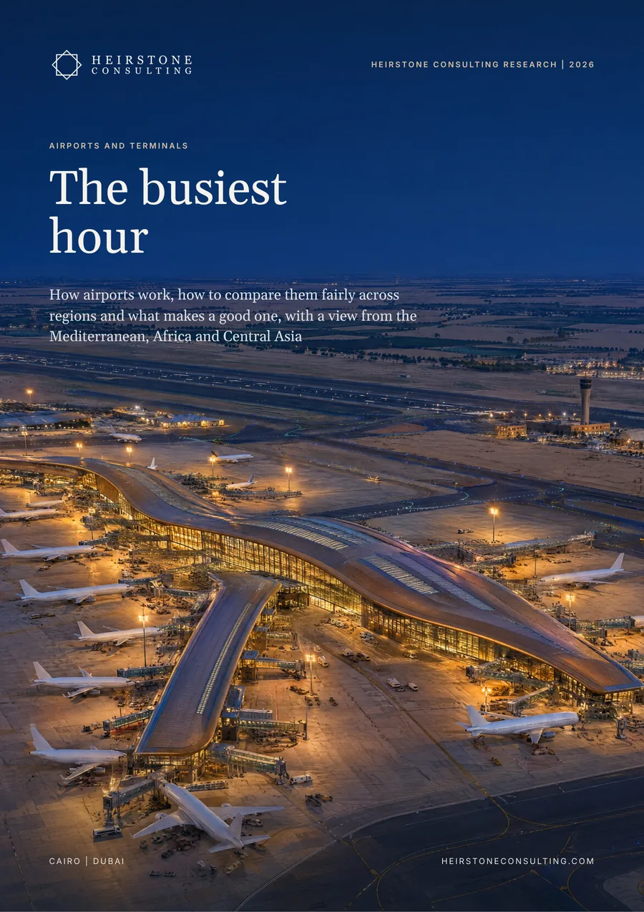

Special Projects
How airports work, how to compare them fairly across regions and what makes a good one, with a view from the Mediterranean, Africa and Central Asia.
Also available in French and Russian: Aéroports et aérogares: L’heure de pointe and Аэропорты и аэровокзалы: Час пик. Choose the language when you request the report.

The report in six numbers
Antalya's busiest month against its average month in 2025. Run for a full year, that month would make a 71-million-passenger airport; the airport carried 39 million.
passengers per aircraft movement in 2025, from Zanzibar to Dubai: the same runway can serve very different airports
square metres of terminal per 1,000 annual passengers of capacity at most new terminals, while cost per passenger of capacity varies more than tenfold
passengers at Cairo in 2025, up 6.8%, the most of any African airport on FRACS data. Egypt's public airports carried about 58.9 million.
of world passenger traffic passes through airports with private investment, on ACI's 2024 ownership data. In Africa the share is 24.3%.
airports in the Heirstone Airport Benchmark 2026, 49 of them in the Mediterranean, Africa, Central Asia and the Caucasus
In brief
We assembled 65 airports across the Mediterranean, Africa, Central Asia, the Gulf, Europe and Asia into one benchmark and compared them by peak, aircraft size, capacity, space, cost and traffic mix. On these measures the league table reorders, and the answer to what makes a good airport depends on the job the airport does.
Antalya carried 39.0 million passengers in 2025. Its busiest month, run for a year, would be 71.5 million, close to the 80 million its new concession is building towards. Istanbul's busiest month was only 1.18 times its average. Leisure gateways should be planned and judged on peak-month capacity and off-peak yield.
Passengers per aircraft movement ran from 40 at Zanzibar to 209 at Dubai in 2025. Addis Ababa handled almost as many movements as Berlin with half the passengers. Gatwick moved 259,000 flights on one runway, more than Doha's 141,000 per runway.
Most new terminals sit between 9.7 and 16.9 m² per 1,000 annual passengers of capacity. Cost per passenger of capacity runs from about US$20 for brownfield expansions to US$240 to 266 at Beijing Daxing, Rwanda's Bugesera and Heathrow's Terminal 5. Cairo's Terminal 4, at US$87.5 to 112.5 per added passenger on official figures, sits within the range for new terminals.
We define six airport jobs and an eight-question Heirstone Airport Test whose pass marks come from the benchmark. Doha is about 75% transfer, while Incheon, almost wholly international, is 11%. The two should not share a scorecard.
Commercial income is 37% of airport revenue worldwide, and car parking now earns more than shops. Private capital stands behind 49% of world traffic and 24.3% in Africa. Egypt's IFC-advised programme for 11 airports keeps the assets in state ownership and has prequalified seven consortia for its Hurghada pilot.
What it means
Size and phase airports on a stated design hour, and commit the next phase while there is still headroom: at 10% growth a year and four years to build, that means at about 68% of capacity.
Choose the bid variable and the service targets with the same care as the capital plan.
Underwrite the peak month, and price commercial income against regional peers.
Inside the full report
Heirstone datasets
airports in the Heirstone Airport Benchmark 2026, 49 of them in the Mediterranean, Africa, Central Asia and the Caucasus
six airport jobs and eight questions in the Heirstone Airport Test, each question weighted by job
Built from public sources current at October 2026. Every figure is referenced in the report, and figures we derive by combining published numbers are labelled Heirstone analysis.
Not by annual traffic alone. The Heirstone Airport Benchmark compares 65 airports by peak, aircraft size, capacity, terminal space, cost and traffic mix. Passengers per aircraft movement, for example, ran from 40 at Zanzibar to 209 at Dubai in 2025, so the same runway can serve very different airports.
Most new terminals sit between 9.7 and 16.9 m² per 1,000 annual passengers of capacity, but an airport should be sized on a stated design hour, not on annual traffic. Antalya carried 39.0 million passengers in 2025, yet its busiest month, run for a year, would be 71.5 million.
While there is still headroom. At 10% traffic growth a year and four years to build, the next phase has to be committed at about 68% of capacity.
Special Projects
Heirstone Consulting Research
Tell us what you are deciding and by when. A senior adviser replies within one business day.
Contact us